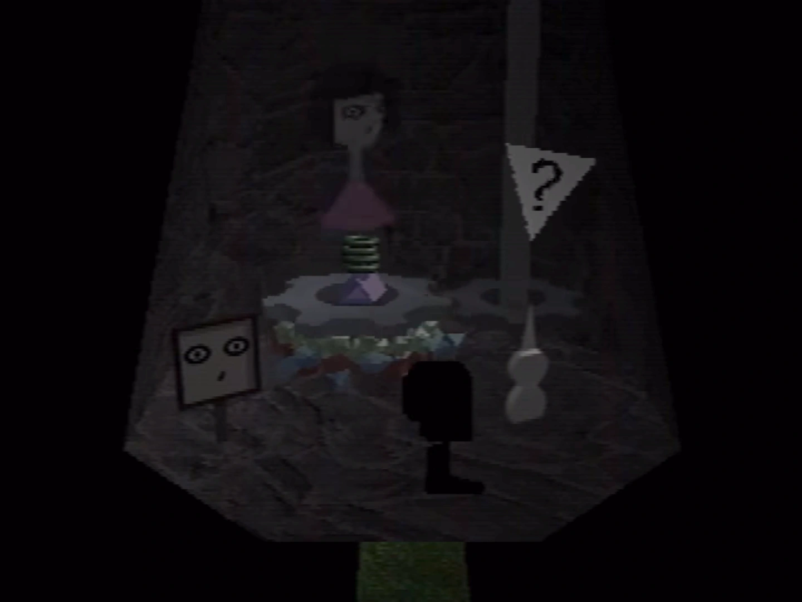
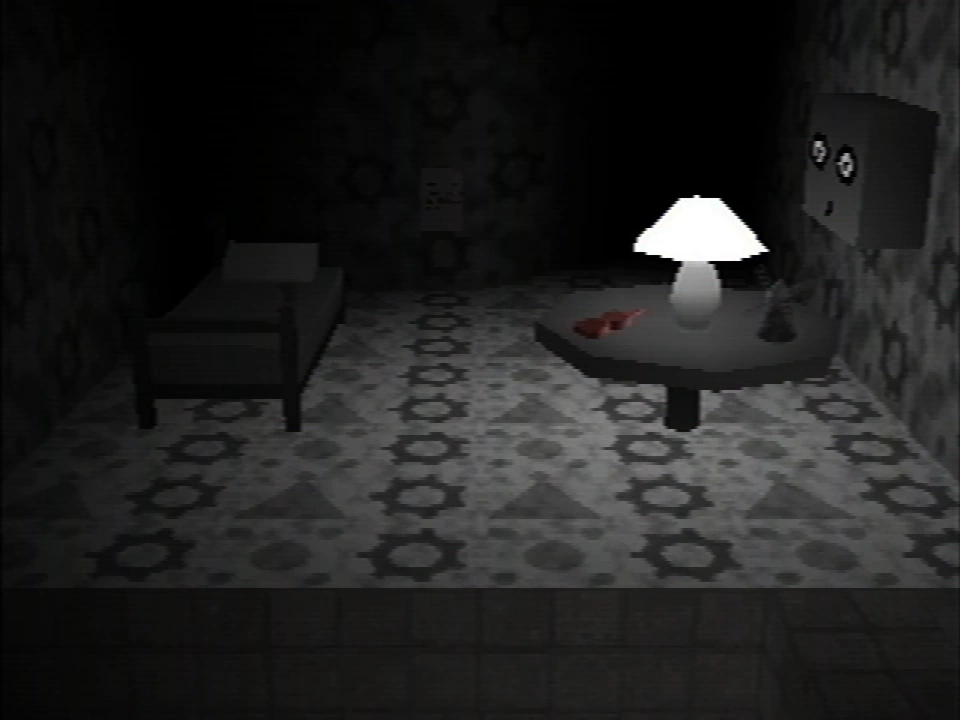
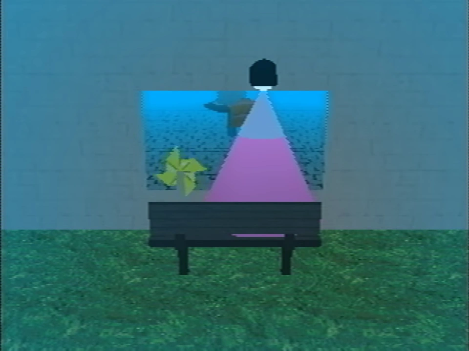

Lina Leskowitz
{kind=link}

{kind=link}
Lina's appearance inside the windmill (brightened)
Lina Leskowitz is a character that is mentioned throughout the series.
Lina is Anna's sister, and was Marvin's friend. After an incident at the windmill in 1977, Lina went missing. Petscop contains a gravestone which suggests she may have died at this time.
History
{kind=link}

{kind=link}
Lina's room in the Child Library
Lina was first depicted in Petscop 9, when Paul enters the windmill. Inside, he finds two large gears, a white tool and an image of Lina's face which may be used within the Child Library. In one of the gears there is a large pile of pieces, with a translucent model of a girl, presumably Lina, on top of them.
Paul uses the white tool in order to collect 50 pieces from the gear. After this, the gears begin rotating in the opposite direction, a rumbling noise begins to play and the girl disappears.
At the Child Library, Paul enters the face that he found inside the windmill. Inside, he finds a note discussing the windmill's disappearance in 1977:
You must have guessed, but I was looking through your things.
I found that picture of you from 1977, standing in front of an old windmill with your friend.
You went there, and it was a bad idea. Your friend and the windmill both disappeared into thin air.
Her sister was holding the camera. She took another picture minutes later: just you, no windmill, and no friend.
You married her sister, and years later, your friend was reborn as your daughter.
Your wife won't admit this is true, but I know it, because I found the evidence.
Your friend never returned with you, and the windmill was gone. I went to see it myself. Where is it? What did you do?
- Rainer, Newmaker
In Petscop 17, a text box directed at Carrie discusses Lina's disappearance, and how Marvin attempted to "lure her home":
A girl went missing around here.
Story goes, your daddy used to sit on a bench with a birthday cake, trying to lure her home.
Instead of "missing girl" signs, he put up "birthday girl" signs, promising cake to the birthday [girl.]
Of course, the birthday girl never came home, to his disappointment.
Eventually, I found out what really happened to that girl.
Want to know? Ask.

{kind=link}
The message on Lina's gravestone
After the player walks in circles around a particular location, a gray "ask" prompt appears. The players asks "What happened to her?" and, after several seconds, a grave begins appearing from the ground. The grave depicts the same face that appeared inside of the windmill. When the player interacts with the grave, the following message is displayed:
Lina Leskowitz
1968 - 1977
They didn't see her.
{kind=link}

{kind=link}
The "boss" figure at the end of the soundtrack video
At the end of the soundtrack video, Tiara refers to a "Boss" using P2 to TALK. Phonetically however, she is saying "Lina." When the player walks forward, they find a figure resembling the one from the windmill, sitting on the bench outside the "party room."
Theories
The note found in Lina's Child Library room may be directed at Marvin.
You must have guessed, but I was looking through your things.
I found that picture of you from 1977, standing in front of an old windmill with your friend.
You went there, and it was a bad idea. Your friend and the windmill both disappeared into thin air.
Her sister was holding the camera. She took another picture minutes later: just you, no windmill, and no friend.
You married her sister, and years later, your friend was reborn as your daughter.
Your wife won't admit this is true, but I know it, because I found the evidence.
Your friend never returned with you, and the windmill was gone. I went to see it myself. Where is it? What did you do?
-Rainer, Newmaker
The location of Lina's grave seems to be very similar to the location of the tire which points Paul to the House, and with the quote "They didn't see her" on the gravestone. It's theorized that she was hit by a car. This would be very similar to the story of Toneth, or the dog in Toneth's description, but it doesn't account for the disappearance of the windmill.
- Has broken leg for some reason. I already hung him on a wall, too late to take it back. It makes me think about the dog actually. Because when the car hit him I thought "at least it will be over soon." He survived it, and I was the only one who still wanted to put him down. A dog is an innocent [cut off]
"They didn't see her" could also just mean that she disappeared. Please note as well that while they appear similar, the tire's pedestal and the conical top of the grave are not the same, so there is no concrete connection between the two sites.
The story and message from Petscop 17 seem to refer directly back to the "Party Room", with its park bench through a window, and the birthday cake and '9'-shaped candle, as the gravestone would place Lina at nine years old, or nearly nine, when she died. The date on the gravestone also gives a more concrete connection to Rainer's note in her room.
The theory that Lina was hit by a car could also be supported by the fact that Paul gets hit by a car while in the Shadow monster man state in Petscop 22, the same state necessary for reaching the windmill.
The "other Auntie" mentioned at the end of the Book of Baby Names may be Lina.
Considering that "Lina" is changed to "Boss" in P2 to TALK, the object surrounded by pieces on the school's third floor may represent Lina, as the subtitles call it's noise "boss sound". This may also relate to Marvin's "who is your boss?" question, asked to the red tool in Petscop 20. In Petscop Soundtrack we see Tiara refer to the "Boss" as driving a car, while Tiara and Paull are sitting in the backseat. This may imply that Lina is still alive.
Lina may have connections to Garalina. The name of the company may be a portmanteau of "garage" and "Lina" — the garage's name in Room Impulse is truncated as "house-gara".
| People | Paul · Belle · Carrie · Marvin · Rainer · Anna · Mike · Lina · Jill · Daniel |
|---|---|
| Characters | Guardian · Amber · Pen · Randice · Roneth · Toneth · Wavey · Care · Tiara |